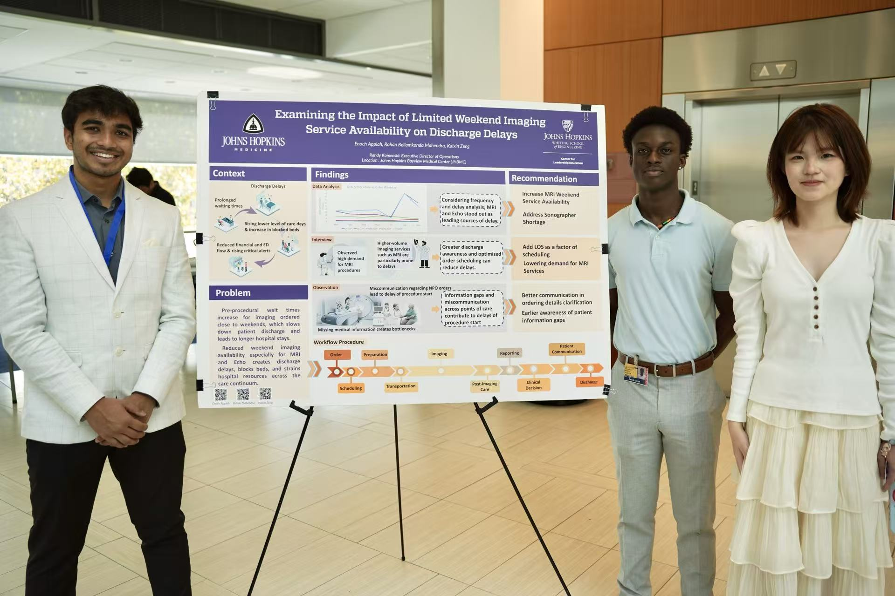
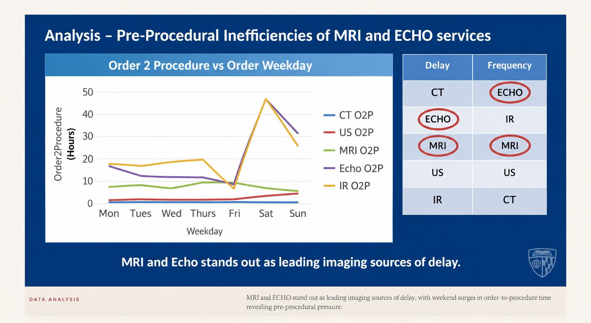
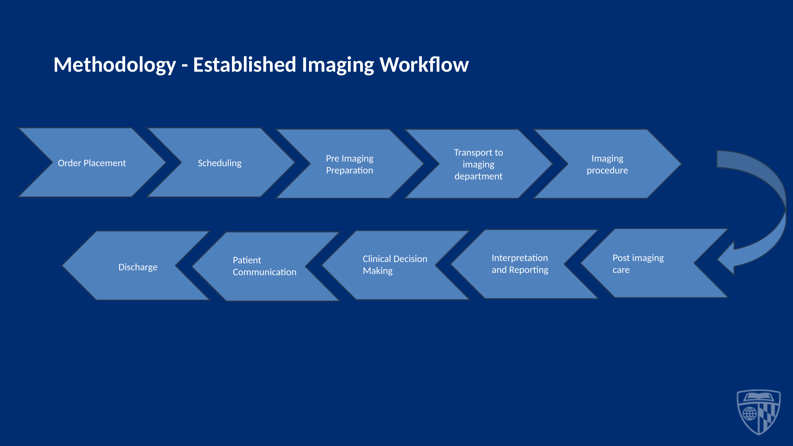
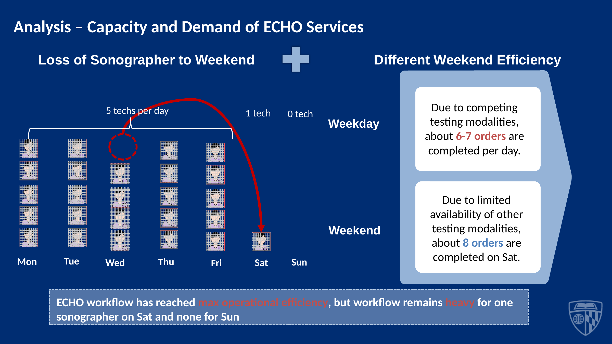

ECHO staffing was a weekend constraint.
Reduced coverage increased pressure on an already heavy workflow.
Johns Hopkins Bayview Medical Center
A healthcare operations case study examining how weekend imaging capacity, scheduling, and communication affect inpatient discharge timelines.

Patients who require imaging before discharge can face longer waits when MRI and ECHO services operate with reduced weekend coverage.
Those delays can extend length of stay, block beds, and create downstream pressure on hospital capacity and Emergency Department flow.

MRI and ECHO stood out as leading imaging sources of delay, with weekend order-to-procedure patterns revealing operational pressure.
Reduced coverage increased pressure on an already heavy workflow.
Higher demand combined with limited weekend service created scheduling pressure.
STAT labels were used inconsistently while discharge relevance was not always incorporated into scheduling.
Missing information and clarification needs could delay procedure start.

Imaging workflow mapped from order placement through discharge.

Weekend ECHO staffing fell from five weekday technicians to one on Saturday and none on Sunday.
Increase capacity where weekend constraints are most visible.
Reduce ECHO bottlenecks created by limited weekend staffing.
Use discharge awareness as an explicit prioritization factor.
Improve alignment between order priority and procedure execution.